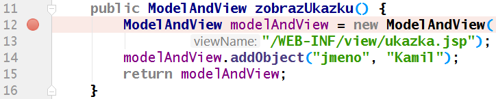

Lekce 07 - Procvičování validací
Osnova:
- Organizační věci
- Java násobilka
- NullPointerException a krokování programu
- Ve zdrojovém textu lze zapíchnout tzv. breakpoint 
- Program lze spustit v ladicím režimu (broučkem místo šipky )
- Po zastavení v breakpointu lze krokovat pomocí Step over (F8)
- Najetím na libovolnou proměnnou se zobrazí její obsah
- Pro skončení ladění lze zvolit Resume program (F9)
- Procvičování (úkoly dle slajdů)
- Přestávka
- Spring MVC - Validace
Soubory
Materiály z lekce najdete zde: Java2Web-Lekce07.7z
Videozáznam
Na Youtube je záznam z lekce:
Celý playlist na Youtube najdete zde: Java 2 Web - youtube playlist.
Domácí úkol 07
Přidejte validace do úkolů Bezdomovci,
Velbloudi a
Obvod a obsah obdelníku (viz zadání ze slajdů na hodině).
Úkoly znovu publikujte do cloudu na jejich správné adresy
(Bezdomovce na /ukol05,
Velbloudy na /ukol06)
a nezapomeňte na FTP nahrát i zabalenou verzi celých projektů
(7-Zip) do složky /ukoly.
Dále přidejte validace ještě do programu pro výpočet
Obvodu a obsahu obdelníka
a vystavte jej jako /ukol07.
Screenshot s ukázkou validační chyby vystavte
do galerie Úkol z lekce 07 na Facebook.
Jak přezobrazit stránku s radiobuttony
Při validování Bezdomovců (a Velbloudů) pravděpodobně narazíte na následující problém:
Při přezobrazení stránky, na které jsou přepínací tlačítka (tzv. radiobuttony), je po zamítnutí validace potřeba obnovit v přepínacích tlačítkách stav (zvoleno / nezvoleno).
U klasických políček <input> stačí nechat vyplnit hodnotu
value="${vyplnenyFormular.nazevPolicka}".
U radiobuttonů to ale nestačí.
Radiobuttony vypadají takto:
<input type="radio" name="clovek1" value="bezdom"/> <input type="radio" name="clovek1" value="prof"/>
Pokud byste chtěli, aby jedna položka byla zvolená, bude to vypadat takto:
<input type="radio" name="clovek1" value="bezdom" checked="checked"/> <input type="radio" name="clovek1" value="prof"/>
Je tedy nutné, aby se podle předchozí hodnoty ${vyplnenyFormular.clovek1}
buď vygeneroval do webové stránky nápis
checked="checked" nebo ne.
Zařídit to lze například trojným operátorem:
podminkovyVyraz ? vysledekAno : vysledekNe
Např. pokud bychom chtěl porovnávat řetězec barva, jestli obsahuje slovo "červená":
String barva = "cervena";
Integer kodBarvy = barva.equals("cervena") ? 0xFF0000 : 0x0000FF;
V JSP se tento trojný operátor zapíše stejně, jen je nutné ho uzavřít do vyhodnocovacích závorek
${ } a je nutné pamatovat na to, že porovnání se nepíše == ani
equals(), ale slovíčkem eq. Uvozovky nebo apostrofy jsou jedno a totéž.
Celý kód tedy může vypadat například takto:
<input type="radio" name="clovek1" value="bezdom" ${vyplnenyFormular.clovek1 eq 'bezdom' ? 'checked="checked"' : ''}/> <input type="radio" name="clovek1" value="prof" ${vyplnenyFormular.clovek1 eq 'prof' ? 'checked="checked"' : ''}/>